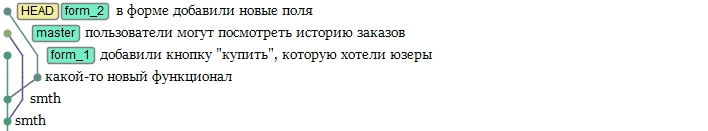
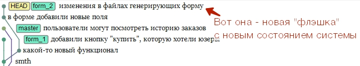
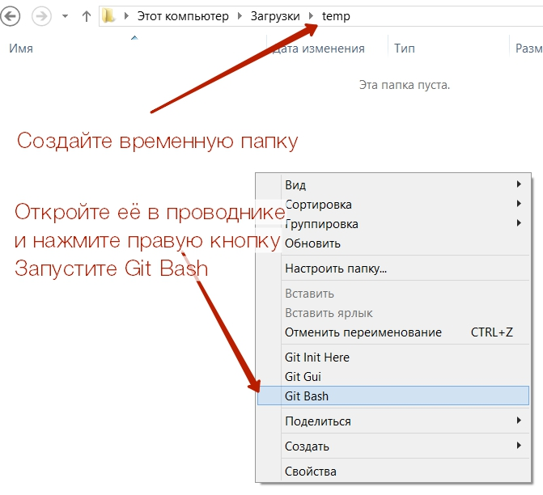
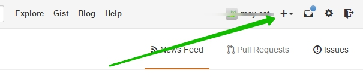
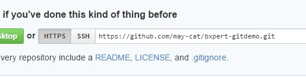
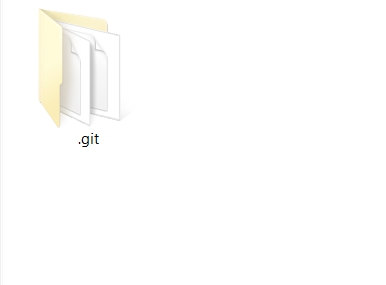
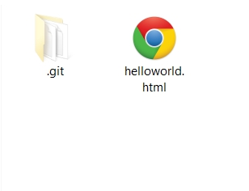
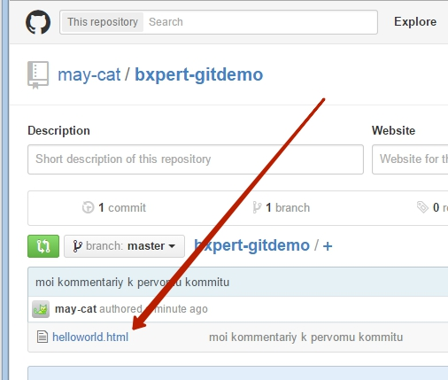

04 Апр 2015
недели на внедрение
статьи нужно прочесть
прибавится к вашему резюме
минут чтобы принять решение
Бытует мнение, что системы контроля версий нужны "только для крупных производств", но это - следствие непонимания всех преимуществ, что несёт с собой технология.
Система контроля версий (такая, как git, svn или mercurial) пригождается даже если вы работаете над проектом в одиночку и планируете писать безошибочный код с первого раза.
Кроме того, как уже писали в статье о развитии разработчика, владение системами контроля версий - это серьёзный плюс для вашего резюме. Как только Вы входите в более-менее профессиональную разработку - без систем контроля версий не обойтись. Как только Вы захотите получать клиентов или сотрудничать с крупными агенствами - Вам так же понадобятся системы контроля версий. Ваша компания будет значительно меньше ценится как подрядчик, если вы даже этой технологией не владеете.
Внедрение системы контроля версий - это просто и полезно, что и должна доказать эта инструкция.
- вы начинаете наглядно видеть проект на новом уровне, как набор функционала и версий, а не просто как сборник кода, распиханного по файлам
- вы видите кто, когда и почему внёс правки
- вы можете разграничивать доступ к коду разных частей системы
- вы можете масштабировать разработку, подключая новых разработчиков
- повышаете ответственность разработчиков за код, делаете все их систематические "косяки" видимыми и исправимыми
- есть резервные копии на любую точку развития проекта, всегда можно откатиться к рабочему виду
Ниже вашему вниманию представлена подробная инструкция, как начать использовать git вне зависимости от внешних обстоятельств. Мы подготовили для вас описание самых распространённых ситуаций и всех неободимых знаний, начинать осваивать можно прямо сейчас!
Представьте, что у вас есть N флэшек с копиями сайта на разные моменты времени и разным функционалом. И флэшки эти лежат, прикреплённые к листочку, чтобы их можно было рассматривать в виде дерева, вот так:

Это - упрощение, в системе git данные хранятся в более "упакованном" виде, но для понимания "как пользоваться гитом" такой метафоры достаточно.
Вы можете воткнуть любую флэшку и сделать так, чтобы сайт отображался именно в состоянии, которое зафиксировано на ней. Когда вы откроете дерево файлов - там будут файлы именно на указанный момент времени, в указанной "ветке" разработки.
Поздравляю, вы только что поняли что вам нужно от git'а.
Но это ещё не всё: данные нужно изменять, а содержимое наших "флэшек" изменять нельзя.
На самом деле - можно, но это совсем другая история, и скорее всего это не понадобится вам в ближайшие полгода-год.
Представьте себе, что работать с флэшками вы будете через волшебную USB-коробочку.
Когда вы поработали с файлами на флэшке и захотели сохранить эти изменения - вы нажимаете на кнопочку на USB-коробке и вам в руки падает новая "флэшка", новое состояние системы. Вы прикрепляете его на соответствующее место в дереве.

Поздравляю, вы научились делать коммиты в git.
В какой-то момент Вам захотелось объединить изменения, сделанные в двух разных "ветках" программы.
Вставляем в USB-коробочку две флэшки, жмём кнопку "merge" и получаем ещё одну флэшку, с магическим образом объединёнными исходниками.
* На самом деле во время магического объединения бывают проблемы, и тогда разработчик помогает git'у разобраться.
Поздравляем, вы поняли суть работы с ветками git.
Теперь представьте себе, что командная консоль linux/windows - это и есть та самая коробочка. Команды наподобие "git commit" или "git push" - это и есть те самые кнопочки на волшебной USB-коробке. Представили?
Тогда Вы готовы попробовать попробовать онлайн-тренажёр.
Или попробовать тренажёр по работе с ветками.
Давайте прямо сейчас проделаем простые операции и убедимся, что мы можем освоиться с этой технологией.
Выделите 40 минут прямо сейчас и сделайте несколько простых действий, описанных ниже. Это не потребует ничего сверхестественного, во время некоторых действий вы сможете параллельно продолжать свои дела, а польза от чтения статьи увеличится многократно.
Git нужно устанавливать на том компьютере/сервере, где находятся исходные коды, потому что именно с ними он и будет работать.
В общем случае необходимо наличие git на веб-сервере и на Вашей локальной машине. В первую очередь разберёмся с последней, потому что вопрос настройки git на веб-сервере будет решаться позже.
Предположим, что Вы работаете на ОС Windows. Если это не так и вы работаете на Linux, то Вам уже пришлось научиться гуглить :) Найдите решение под свой дистрибутив (напр.: apt-get install git)
1. Скачайте git для windows в сборке msysgit и установите.
2. Создайте временную папку и откройте в ней git bash

3. Вы великолепны!
Обычно разработчик не занимается настройкой инфраструктуры. С помощью сервиса github сымитируем работу системного администратора.
Зарегистрируйтесь в сервисе и создайте новый репозиторий

Назовём его bxpert-gitdemo.
В результате нам нужно зайти в репозиторий на гитхабе и получить строку вида:

Кто бы ни создавал ваш репозиторий - вам в результате всегда нужно получить адрес этого репозитория для git'а.
В нашем случае "проект" ещё пуст, но оставим это без внимания. Когда вы будете подключаться к работе над существующим проектом - всё будет точно так же.
Запустите Git Bash как было описано на первом шаге, сейчас мы будем работать в нём.
Возьмите адрес, полученный от создания репозитория, полученный на втором шаге и наберите в консоли команду вида
git clone https://github.com/may-cat/bxpert-gitdemo.git
Когда будете работать с реальным репозиторием - после этого сервер может запросить логин и пароль.
К слову, логин и пароль можно указать как часть url (смотри главу "Аутентификация пользователя с помощью URL").
В результате у вас появится папка bxpert-demo, именно в этой папке нам и следует работать. В этой же рабочей папке лежит служебная папка .git

Допустим, перед вами поставлена задача сделать в проекте страничку helloworld.html.
Создайте в рабочей папке нужный файл с произвольным содержимым.

Теперь указанные изменения нужно зафиксировать, то есть сделать коммит. Откройте консоль git bash в рабочей папке и введите.
git add .
git commit -m "moi kommentariy k pervomu kommitu"
Первой строчкой вы сказали, что зафиксировать надо все внесённые изменения без исключения. Теперь изменения зафиксированы, но пока что ещё не отправлены на внешний сервер. Проверьте - ведь на гитхабе у вас ничего не изменилось. Чтобы передать данные на гитхаб, нужно набрать
git push origin master
Изменения уйдут в гитхаб, что можно увидеть через браузер.

Чтобы работать над проектом в одиночку - этого достаточно.
Представьте себе, что вы сделаете helloworld.html и ваш коллега, работающий с тем же репозиторием, сделает тоже такой же файл.
Git нужно будет как-то разрешить эту ситуацию и из двух пришедших файлов сделать один. В том ведь и смысл гита.
Есть два варианта решения:
- первая - это "разрешение конфликтов". Она всплывает тогда, когда вы пытаетесь сделать git push в репозиторий - а там уже кто-то что-то поменял, и это мешает применить ваши изменения. В таком случае git спрашивает у вас совета, как слить файлы, которые он не может слить самостоятельно. Читайте статью о решении конфликтов.
- вторая - это разделение проекта на ветки. Суть в том, что мы создаём разные "версии" проекта, и позволяем разным людям работать с этими версиями, не мешая друг другу. Момент же сливания этих веток (и, следовательно, возможного возникновения конфликтов) откладывается на потом, когда некто применит специальную команду git merge, объединяющую ветки.
Если Вы спешите, можете сразу читать про работу с ветками, но лучше почитать общее руководство по git.
Для того, чтобы полученные навыки не прошли мимо вас - нужно практиковаться. Вы можете присоединится к одному из публичных репозиториев на github, создать свой проект или перевести своё производство на git, о чём будет рассказано ниже.
Ниже представлена пошаговая инструкция, что нужно сделать, чтобы через 2 недели вся ваша компания вела проекты под git'ом. Обратите внимание, что выполнение перехода займёт минимум Вашего личного времени, а благодаря правильному подходу - также будет минимум трудностей у ваших разработчиков. Для вас подготовлены все должностные инструкции и сценарии, их нужно только распечатать и раздать.
На чудесном сервисе bitbucket можно бесплатно разместить git-репозиторий, который будет доступен только авторизованным по логину-паролю пользователям. Ограничение - не более 5 человек могут работать над одним репозиторием бесплатно.
Зарегистрируйтесь и создайте репозиторий в bitbucket.
Лучше выбрать новый проект, потому что его будет проще адаптировать. Но можно и существующий.
Для нового проекта требования такие:
- git нужно инициализировать на уровень выше корня сайта. Это более корректно с точки зрения современного развития веб-технологий и позволяет более корректно использовать миграции данных и служебные скрипты.файла gitignore,
- лучше исключать папку /bitrix из git - для всех данных, связанных с проектом есть папка /local/.
- в папке bitrix нужно инициализировать ещё один git-репозиторий и хранить отдельно.
Различные мнения о требованиях Вы можете почитать на форуме 1С-Битрикс.
Нужно договориться с разработчиками/разработчиком, который будет работать на проекте, что они используют GIT.
Если разработчики умеют вводить буковки в google - они справятся с посильной задачей освоить git.
Когда шок от нововведений прошёл, но ещё не слишком - вводим инфраструктурные изменения, чтобы закрепить технологию в производстве. Есть несколько вариантов решения:
- Если у вас есть свой админ, который создаёт площадки под каждый проект - даём ему задачу настроить гит и выдавать ключи разработчикам. Ему на это потребуется максимум 4-8 часов.
- Если у нет своего админа, но вы не хотите разбираться - можно найти недорогого админа-аутсорсера (на фриланс-площадках или спросить у других Битриксоидов). Цена вопроса вряд ли будет выше тех же 4-8 часов администратора.
- Вы можете купить инфраструктуру целиком, купив корпоративный аккаунт github, bitbucket или их аналогов.
Вам предстоит принять решение, кто в Вашей компании обладает компетенцией и правом реализовать данные изменения. После того, как решение будет принято, соберите планёрку и скоординируйте действия сотрудников.
Хорошая статья от Яковенко Дмитрия
Статья Юлии Бедросовой с ценным обсуждением в комметариях